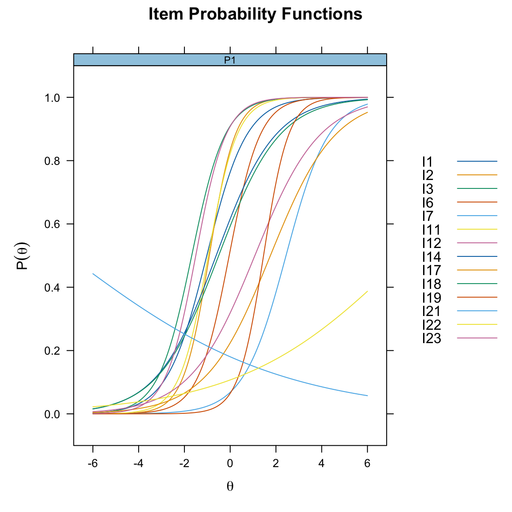
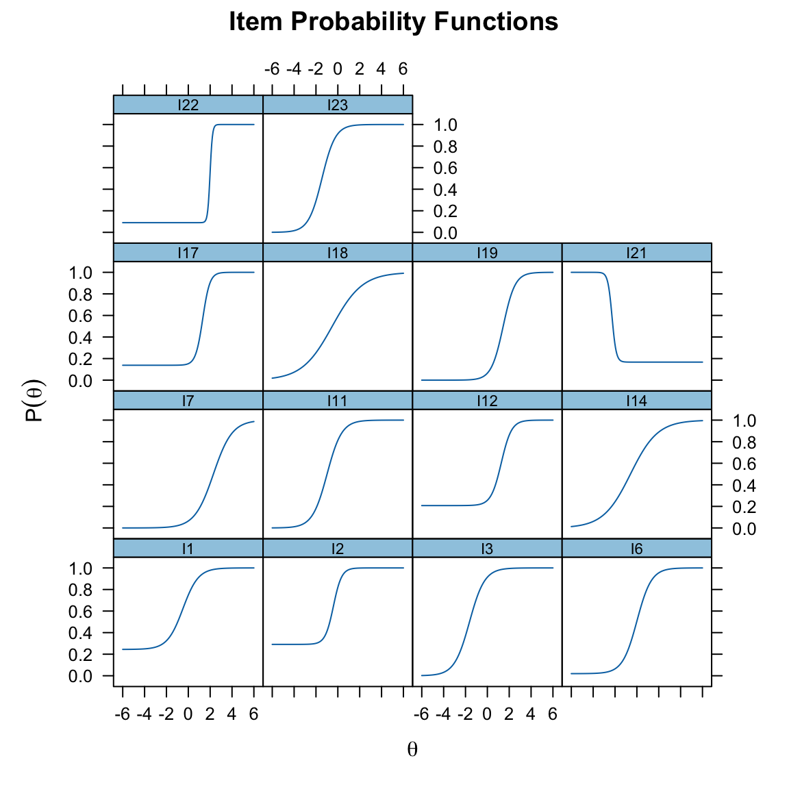
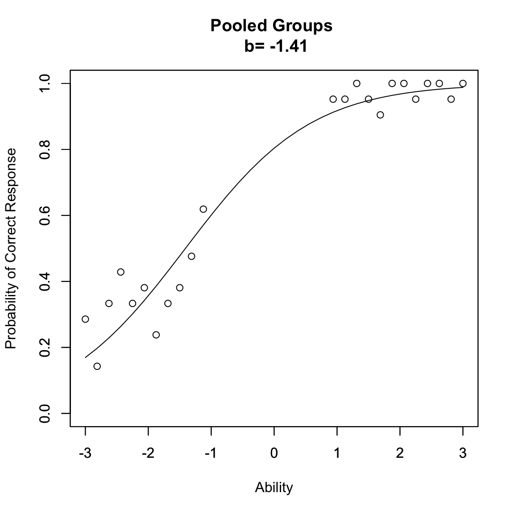

here::here("code", "_common.R") |>
source()
# Load packages
if (!requireNamespace("pacman")) install.packages("pacman")
pacman::p_load(eRm, mirt, grid, TAM, ggmirt, psychotools, latex2exp)70 Modelli 1PL, 2PL e 3PL
In questo capitolo apprenderai come:
- adattare e interpretare i modelli IRT: 1PL, 2PL e 3PL, comprendendo le differenze concettuali e pratiche tra loro;
- analizzare il principio dell’invarianza di gruppo e la sua importanza per confronti equi tra popolazioni diverse.
Prerequisiti
- Leggere il capitolo 8, Item Response Theory, del testo Principles of psychological assessment di Petersen (2024).
Preparazione del Notebook
70.1 Introduzione
All’interno della teoria della risposta agli item (IRT), il modello di Rasch rappresenta l’approccio più restrittivo, poiché impone vincoli stringenti sulle relazioni tra abilità delle persone e difficoltà degli item. Questi vincoli garantiscono semplicità e proprietà matematiche utili, ma limitano la flessibilità del modello nel rappresentare dati complessi.
Progressivamente, tali restrizioni possono essere allentate per definire modelli più flessibili:
- Il modello 1PL (One-Parameter Logistic), che conserva l’assunzione di uguale discriminazione tra gli item ma non richiede tutte le proprietà rigorose del modello di Rasch.
- Il modello 2PL (Two-Parameter Logistic), che introduce un parametro aggiuntivo per descrivere la capacità discriminante degli item, consentendo una rappresentazione più accurata delle risposte.
- Il modello 3PL (Three-Parameter Logistic), che aggiunge un terzo parametro per tenere conto della probabilità di risposta corretta casuale (detta anche “guessing”).
Questa progressione da Rasch a 1PL, 2PL e 3PL permette una maggiore adattabilità del modello IRT, bilanciando semplicità e flessibilità a seconda delle esigenze specifiche dei dati e dell’analisi.
70.2 Un Esempio Pratico
In questo capitolo, utilizzeremo nuovamente i dati che abbiamo esaminato in precedenza nel Capitolo 69.
data(data.fims.Aus.Jpn.scored, package = "TAM")
fims <- data.fims.Aus.Jpn.scoredIl data set include 400 partecipanti. Per facilitare la manipolazione dei dati, cambiamo il nome delle colonne.
responses <- fims[1:400, 2:15]
colnames(responses) <- gsub("M1PTI", "I", colnames(responses))
glimpse(responses)
#> Rows: 400
#> Columns: 14
#> $ I1 <dbl> 1, 0, 1, 1, 1, 1, 0, 1, 0, 0, 1, 1, 1, 0, 0, 0, 1, 1, 1, 1, 1,…
#> $ I2 <dbl> 0, 1, 0, 1, 1, 1, 0, 1, 0, 1, 1, 1, 0, 1, 0, 0, 1, 1, 1, 1, 1,…
#> $ I3 <dbl> 1, 1, 1, 1, 1, 1, 1, 0, 1, 1, 1, 1, 1, 1, 1, 0, 1, 0, 1, 1, 1,…
#> $ I6 <dbl> 1, 0, 0, 1, 1, 0, 0, 1, 0, 0, 1, 1, 0, 0, 1, 0, 1, 0, 0, 0, 0,…
#> $ I7 <dbl> 0, 0, 0, 0, 0, 0, 0, 0, 0, 0, 0, 0, 0, 0, 0, 0, 0, 0, 0, 0, 0,…
#> $ I11 <dbl> 1, 0, 0, 1, 1, 0, 1, 1, 0, 1, 1, 1, 0, 1, 1, 0, 1, 1, 1, 1, 0,…
#> $ I12 <dbl> 0, 0, 0, 1, 0, 0, 1, 0, 0, 0, 1, 0, 0, 0, 0, 0, 0, 0, 0, 0, 0,…
#> $ I14 <dbl> 0, 1, 0, 0, 1, 0, 1, 1, 1, 0, 0, 1, 0, 0, 1, 0, 1, 0, 1, 1, 0,…
#> $ I17 <dbl> 1, 0, 0, 0, 0, 0, 1, 0, 0, 0, 0, 1, 0, 0, 0, 1, 1, 0, 0, 0, 0,…
#> $ I18 <dbl> 0, 0, 1, 0, 1, 1, 0, 1, 0, 1, 0, 1, 0, 0, 1, 1, 0, 0, 1, 1, 0,…
#> $ I19 <dbl> 0, 0, 0, 0, 0, 0, 0, 0, 0, 0, 0, 0, 0, 0, 0, 0, 0, 0, 0, 0, 0,…
#> $ I21 <dbl> 0, 0, 0, 0, 0, 1, 0, 0, 0, 0, 0, 0, 0, 1, 0, 0, 0, 0, 0, 0, 0,…
#> $ I22 <dbl> 0, 0, 0, 0, 0, 0, 0, 0, 1, 1, 0, 0, 0, 0, 0, 0, 0, 0, 0, 0, 1,…
#> $ I23 <dbl> 1, 1, 1, 0, 1, 0, 0, 1, 0, 1, 1, 0, 1, 1, 1, 0, 0, 1, 1, 1, 0,…Definiamo il fattore gender:
70.3 Modello 1PL
Il modello ad un parametro logistico (1PL) descrive la probabilità che un rispondente con un certo livello di abilità dia una risposta corretta a un item specifico. La formula del modello è:
\[ P(X_i = 1 \mid \theta_v, \alpha, \delta_i) = \frac{\exp(\alpha(\theta_v - \delta_i))}{1 + \exp(\alpha(\theta_v - \delta_i))} = \frac{1}{1 + \exp(-\alpha(\theta_v - \delta_i))}, \tag{1} \]
dove:
- \(\theta_v\) è il livello di abilità del rispondente \(v\),
- \(\delta_i\) è il parametro di difficoltà dell’item \(i\),
- \(\alpha\) è il parametro di discriminazione dell’item, fissato e uguale per tutti gli item nel modello 1PL.
L’assunzione fondamentale del modello 1PL è che \(\alpha\) sia costante per tutti gli item, indicando che tutti gli item hanno la stessa capacità di discriminazione tra rispondenti con abilità diverse.
70.3.1 Il Ruolo del Parametro \(\alpha\)
Il parametro \(\alpha\) definisce la pendenza della curva caratteristica dell’item (ICC). Maggiore è \(\alpha\), più ripida è la curva ICC, e maggiore è la capacità dell’item di discriminare tra rispondenti con abilità vicine alla difficoltà dell’item (\(\delta_i\)).
- \(\alpha = 0\): L’item non discrimina affatto; la probabilità di risposta corretta è costante e indipendente dal livello di abilità.
- \(\alpha > 0\): L’item discrimina, e la sua capacità discriminatoria cresce con l’aumento di \(\alpha\).
70.3.2 Esempio Pratico
Consideriamo tre item (\(i_1\), \(i_2\), \(i_3\)) con la stessa difficoltà \(\delta = 0\) e tre valori di discriminazione: \(\alpha_1 = 0.0\), \(\alpha_2 = 1.0\) e \(\alpha_3 = 2.0\). Esaminiamo due rispondenti con livelli di abilità:
- Rispondente A con \(\theta_A = -1\),
- Rispondente B con \(\theta_B = 1\).
Item con $= 0.0
Con \(\alpha = 0\), la probabilità di risposta corretta è costante, pari a 0.5 per tutti i livelli di abilità:
\[ P(X_i = 1 \mid \theta, \delta) = 0.5. \]
Questo item non discrimina tra rispondenti con abilità diverse e non aggiunge alcuna informazione utile.
Item con \(\alpha\) = 1.0
Con \(\alpha = 1.0\), la probabilità di risposta corretta dipende dal livello di abilità:
\[ P(X_i = 1 \mid \theta, \delta) = \frac{1}{1 + \exp(-(\theta - \delta))}. \]
- Per \(\theta_A = -1\): \(P(X_i = 1) \approx 0.269\),
- Per \(\theta_B = 1\): \(P(X_i = 1) \approx 0.731\).
La curva ICC è moderatamente ripida e l’item discrimina tra rispondenti con abilità diverse.
Item con \(\alpha\) = 2.0
Con \(\alpha = 2.0\), l’ICC diventa più ripida:
\[ P(X_i = 1 \mid \theta, \delta) = \frac{1}{1 + \exp(-2(\theta - \delta))}. \]
- Per \(\theta_A = -1\): \(P(X_i = 1) \approx 0.119\),
- Per \(\theta_B = 1\): \(P(X_i = 1) \approx 0.881\).
La maggiore ripidità riflette una capacità discriminatoria più alta, permettendo di distinguere con maggiore precisione i rispondenti in base alle loro abilità.
In conclusione, nel modello 1PL, il parametro \(\alpha\) controlla la capacità degli item di discriminare tra rispondenti con abilità diverse. Un aumento di \(\alpha\) rende la curva ICC più ripida, migliorando la discriminazione, mentre un \(\alpha\) più basso rende la curva piatta e riduce la capacità informativa dell’item. Tuttavia, nel 1PL, l’assunzione che \(\alpha\) sia costante per tutti gli item rappresenta un limite rispetto ai modelli più complessi, come il 2PL, che permettono a ogni item di avere una discriminazione diversa.
70.3.3 Modello di Rasch e Modello 1PL: Confronto e Differenze
Il modello di Rasch e il modello 1PL (One-Parameter Logistic) sono due approcci alla misurazione che condividono una struttura matematica simile. Entrambi utilizzano un parametro di discriminazione (α) costante per tutti gli item, pur permettendo variazioni nei parametri di difficoltà (δᵢ).
La differenza tecnica principale sta nel valore del parametro α:
- Nel modello di Rasch, α è sempre fissato a 1.0
- Nel modello 1PL, α può assumere qualsiasi valore costante, anche diverso da 1.0
Matematicamente, i due modelli sono equivalenti: è possibile convertire i parametri da un modello all’altro attraverso una semplice riscalatura, moltiplicando o dividendo θᵥ e δᵢ per α, mantenendo invariate le probabilità di risposta corretta.
Nonostante la loro equivalenza matematica, i due modelli si distinguono per filosofia e obiettivi:
Il modello 1PL si concentra sull’adattamento ai dati empirici:
- Mira a descrivere al meglio i dati osservati
- Offre flessibilità nella scelta del parametro α
- Si adatta ai dati esistenti
Il modello di Rasch privilegia la misurazione oggettiva:
- Pone l’enfasi sulla costruzione di misure stabili e generalizzabili
- Considera il modello come uno standard di riferimento
- Richiede che i dati si conformino al modello, non viceversa
- Si pone come strumento per sviluppare misurazioni valide e oggettive
In sintesi, mentre il modello 1PL è più orientato alla descrizione statistica dei dati, il modello di Rasch si propone come standard per la costruzione di strumenti di misurazione oggettivi e universalmente applicabili.
Esercizio 70.1 In \(\mathsf{R}\), il modello di Rasch si implementa nel modo seguente:
mirt_rm <- mirt(responses, 1, "Rasch", verbose = FALSE)Il modello 1PL si implementa nel modo seguente:
mirt_1pl <- mirt(responses, 1, "1PL", verbose = FALSE)Confrontiamo i due modelli:
anova(mirt_rm, mirt_1pl)
#> AIC SABIC HQ BIC logLik X2 df p
#> mirt_rm 5663 5675 5687 5723 -2816
#> mirt_1pl 5662 5673 5684 5718 -2817 -0.705 -1 NaNI modelli mirt_rm e mirt_1pl sono praticamente equivalenti in termini di adattamento ai dati. Il modello mirt_1pl mostra lievi miglioramenti nei criteri di informazione (AIC e BIC), ma la differenza è minima.
70.3.4 Modello 2PL
Il modello 2PL (Modello IRT a due parametri) rappresenta un’estensione del modello 1PL che consente una maggiore flessibilità, poiché permette alle Curve Caratteristiche degli Item (ICC) di avere pendenze diverse. Questo significa che, a differenza del modello 1PL e del modello di Rasch, le ICC degli item non sono necessariamente parallele. Nel modello 2PL, ogni item è descritto da due parametri fondamentali:
- Parametro di difficoltà (\(b\)): Indica il livello di abilità (\(\theta\)) a cui la probabilità di risposta corretta è del 50%. Determina il posizionamento della curva ICC lungo l’asse delle abilità.
- Parametro di discriminazione (\(a\)): Regola la pendenza della curva ICC, rappresentando la capacità dell’item di distinguere tra rispondenti con abilità simili. Un valore più alto di \(a\) indica una maggiore sensibilità dell’item alle variazioni di abilità.
La formula generale per le ICC nel modello 2PL è:
\[ P(X_i = 1 \mid \theta, a_i, b_i) = \frac{1}{1 + \exp(-a_i (\theta - b_i))}, \]
dove:
- \(\theta\) rappresenta l’abilità del rispondente,
- \(a_i\) è il parametro di discriminazione per l’item \(i\),
- \(b_i\) è il parametro di difficoltà per l’item \(i\).
70.3.5 Implementazione in R con il Pacchetto mirt
Utilizziamo il pacchetto mirt per adattare il modello 2PL ai dati. Il comando mirt() permette di stimare i parametri specificando il modello 2PL:
mirt_2pl <- mirt(responses, 1, "2PL")
#>
Iteration: 1, Log-Lik: -2818.855, Max-Change: 0.66304
Iteration: 2, Log-Lik: -2772.597, Max-Change: 0.26013
Iteration: 3, Log-Lik: -2762.517, Max-Change: 0.12884
Iteration: 4, Log-Lik: -2760.353, Max-Change: 0.06587
Iteration: 5, Log-Lik: -2759.824, Max-Change: 0.03961
Iteration: 6, Log-Lik: -2759.675, Max-Change: 0.02169
Iteration: 7, Log-Lik: -2759.622, Max-Change: 0.01040
Iteration: 8, Log-Lik: -2759.609, Max-Change: 0.00642
Iteration: 9, Log-Lik: -2759.605, Max-Change: 0.00396
Iteration: 10, Log-Lik: -2759.602, Max-Change: 0.00160
Iteration: 11, Log-Lik: -2759.602, Max-Change: 0.00089
Iteration: 12, Log-Lik: -2759.602, Max-Change: 0.00064
Iteration: 13, Log-Lik: -2759.601, Max-Change: 0.00020
Iteration: 14, Log-Lik: -2759.601, Max-Change: 0.00009Per analizzare graficamente le Curve Caratteristiche degli Item, usiamo la funzione plot():
plot(mirt_2pl, type = "trace")Se desideriamo visualizzare tutte le ICC in un unico grafico, senza separarle per item, aggiungiamo l’opzione facet_items = FALSE:
plot(mirt_2pl, type = "trace", facet_items = FALSE)
La funzione coef() consente di ottenere le stime dei parametri degli item:
coef(mirt_2pl, IRTpars = TRUE, simplify = TRUE)
#> $items
#> a b g u
#> I1 1.147 -1.022 0 1
#> I2 1.769 -0.911 0 1
#> I3 1.372 -1.680 0 1
#> I6 1.479 -0.043 0 1
#> I7 1.071 2.441 0 1
#> I11 1.594 -0.957 0 1
#> I12 0.703 1.079 0 1
#> I14 0.771 -0.612 0 1
#> I17 0.707 1.758 0 1
#> I18 0.750 -0.502 0 1
#> I19 1.831 1.459 0 1
#> I21 -0.214 -7.076 0 1
#> I22 0.277 7.657 0 1
#> I23 1.521 -1.503 0 1
#>
#> $means
#> F1
#> 0
#>
#> $cov
#> F1
#> F1 1Queste stime includono:
- \(a\), parametro di discriminazione,
- \(b\), parametro di difficoltà.
70.3.6 Confronto tra Modello 1PL e Modello 2PL
Per valutare quale modello si adatta meglio ai dati, confrontiamo il modello 1PL (discriminazione fissa) con il modello 2PL (discriminazione variabile) utilizzando la funzione anova():
anova(mirt_rm, mirt_2pl)
#> AIC SABIC HQ BIC logLik X2 df p
#> mirt_rm 5663 5675 5687 5723 -2816
#> mirt_2pl 5575 5598 5619 5687 -2760 113.77 13 0Interpretazione dei Risultati
- Criteri di Informazione (AIC e BIC): Il modello 2PL tipicamente mostra valori di AIC e BIC più bassi rispetto al modello 1PL, indicando un miglior adattamento ai dati.
- Log-Likelihood: Il modello 2PL presenta un log-likelihood superiore rispetto al modello 1PL, a indicare una maggiore probabilità di osservare i dati sotto il modello 2PL.
- Test di \(X^2\): Se il p-value associato è significativo (\(p < 0.05\)), ciò suggerisce che il modello 2PL spiega significativamente più variazione rispetto al modello 1PL.
70.3.7 Differenze Chiave tra Modello 1PL e Modello 2PL
| Caratteristica | Modello 1PL | Modello 2PL |
|---|---|---|
| Parametro di discriminazione (\(a\)) | Fisso per tutti gli item (\(a = \alpha\) costante) | Variabile tra gli item (\(a_i\) specifico) |
| Curva ICC | Tutte le curve ICC sono parallele | Le curve ICC possono avere pendenze diverse |
| Adattamento ai dati | Meno flessibile, buono per dati uniformi | Più flessibile, cattura differenze di discriminazione |
In conclusione, il modello 2PL è particolarmente utile quando gli item differiscono nella loro capacità di discriminare tra rispondenti con abilità simili. Questo lo rende una scelta preferibile rispetto al modello 1PL in situazioni in cui gli item non sono omogenei in termini di discriminazione. Tuttavia, la maggiore flessibilità del modello 2PL comporta una maggiore complessità e richiede un dataset con sufficiente variabilità per stimare accuratamente i parametri \(a_i\) e \(b_i\).
70.4 Modello 3PL
Il modello IRT a tre parametri (3PL) è un’estensione del modello 2PL che aggiunge un terzo parametro, il guessing (\(g\)), per tenere conto della probabilità di rispondere correttamente a un item semplicemente per caso. Questo parametro è particolarmente utile nei test a scelta multipla, dove i rispondenti con abilità molto bassa possono comunque selezionare la risposta corretta in modo casuale.
La probabilità di risposta corretta nel modello 3PL è espressa come:
\[ P(X_i = 1 \mid \theta, a_i, b_i, g_i) = g_i + (1 - g_i) \cdot \frac{1}{1 + \exp(-a_i (\theta - b_i))}, \]
dove:
- \(\theta\): abilità latente del rispondente,
- \(a_i\): parametro di discriminazione dell’item \(i\) (controlla la pendenza della curva ICC),
- \(b_i\): parametro di difficoltà dell’item \(i\) (indica il livello di abilità richiesto per una probabilità del 50% di risposta corretta, escludendo il guessing),
- \(g_i\): parametro di guessing (probabilità minima di rispondere correttamente a un item, anche per rispondenti con abilità molto bassa).
70.4.1 Caratteristiche del Modello 3PL
-
Parametro di Guessing (\(g\)):
- Introduce un asintoto inferiore maggiore di zero nella curva caratteristica dell’item (ICC).
- Ad esempio, un valore \(g_i = 0.25\) indica che, anche per abilità molto basse (\(\theta \to -\infty\)), la probabilità di rispondere correttamente all’item è almeno del 25%. Questo valore è tipico per test a scelta multipla con quattro opzioni, dove c’è il 25% di probabilità di indovinare.
-
Relazione con il Modello 2PL:
- Il modello 3PL generalizza il modello 2PL aggiungendo il parametro \(g\), che aumenta la flessibilità per rappresentare meglio il comportamento degli item in situazioni reali.
- Mentre nel modello 2PL la probabilità di risposta corretta può scendere a zero per abilità molto basse, nel modello 3PL la probabilità minima è definita da \(g\).
-
Curve Caratteristiche degli Item (ICC):
- La presenza del parametro \(g\) modifica la forma della curva ICC, che non tocca mai lo zero ma si avvicina asintoticamente al valore di \(g\) per \(\theta\) molto basso.
-
Complessità del Modello:
- L’aggiunta del parametro \(g\) rende il modello più complesso rispetto al 2PL, aumentando il numero di parametri da stimare.
- Per ottenere stime affidabili, è necessario disporre di un dataset con un numero sufficiente di item e rispondenti.
Esercizio 70.2 Utilizziamo il pacchetto mirt per stimare i parametri del modello 3PL:
mirt_3pl <- mirt(responses, 1, "3PL")Le curve ICC possono essere visualizzate con il comando:
plot(mirt_3pl, type = "trace", facet_items = TRUE)
Utilizziamo la funzione coef() per ottenere le stime dei parametri degli item (\(a\), \(b\), \(g\)):
coef(mirt_3pl, IRTpars = TRUE, simplify = TRUE)
#> $items
#> a b g u
#> I1 1.410 -0.493 0.244 1
#> I2 2.667 -0.404 0.291 1
#> I3 1.445 -1.633 0.000 1
#> I6 1.514 0.009 0.019 1
#> I7 1.163 2.297 0.000 1
#> I11 1.487 -0.984 0.000 1
#> I12 2.131 1.275 0.207 1
#> I14 0.805 -0.586 0.000 1
#> I17 3.076 1.320 0.138 1
#> I18 0.724 -0.510 0.000 1
#> I19 1.844 1.449 0.000 1
#> I21 -5.264 -2.271 0.167 1
#> I22 9.179 1.990 0.090 1
#> I23 1.625 -1.452 0.000 1
#>
#> $means
#> F1
#> 0
#>
#> $cov
#> F1
#> F1 1Confronto tra modelli 2PL e 3PL
anova(mirt_2pl, mirt_3pl)
#> AIC SABIC HQ BIC logLik X2 df p
#> mirt_2pl 5575 5598 5619 5687 -2760
#> mirt_3pl 5564 5599 5631 5732 -2740 38.784 14 0- Il modello 3PL presenta un AIC inferiore rispetto al modello 2PL, suggerendo un miglior adattamento ai dati.
- Tuttavia, il BIC penalizza maggiormente la complessità del modello, favorendo leggermente il modello 2PL.
- La significatività del test \(X^2\) (\(p = 0.0004\)) indica che il modello 3PL offre un miglioramento significativo rispetto al modello 2PL.
Valutazione della bontà dell’adattamento
Per verificare se il modello 3PL rappresenta adeguatamente i dati, utilizziamo la statistica \(M2\):
M2(mirt_3pl)
#> M2 df p RMSEA RMSEA_5 RMSEA_95 SRMSR TLI CFI
#> stats 76.06 63 0.125 0.0228 0 0.03944 0.04533 0.9751 0.9827- Il valore \(p = 0.125\) indica che il modello 3PL non può essere rifiutato come rappresentazione adeguata dei dati.
- Il RMSEA inferiore a 0.05 (limite superiore: 0.039) suggerisce un buon adattamento.
Adattamento degli item
Il comando itemfit() calcola le statistiche di adattamento (fit) per ciascun item del modello 3PL, fornendo i valori di infit e outfit insieme ai relativi z-score che indicano quanto questi valori si discostano da quelli attesi secondo una distribuzione normale standardizzata.
- L’infit (Information-weighted fit) si concentra principalmente sui rispondenti con un livello di abilità simile alla difficoltà dell’item, ed è quindi particolarmente sensibile alle discrepanze nella “zona di interesse” dell’item, dove la probabilità di risposta corretta si aggira intorno al 50%.
- L’outfit (Outlier-sensitive fit) invece considera tutti i rispondenti, inclusi quelli con abilità molto diverse dalla difficoltà dell’item, risultando più sensibile a risposte inaspettate o estreme.
Per entrambe le statistiche, valori compresi tra 0.7 e 1.3 indicano un buon adattamento dell’item al modello. Valori inferiori a 0.7 suggeriscono che l’item è troppo prevedibile o ridondante, mentre valori superiori a 1.3 indicano la presenza di risposte inaspettate. Per quanto riguarda gli z-score, valori con modulo inferiore a 2 sono considerati accettabili, mentre valori superiori potrebbero indicare problemi di adattamento.
itemfit(mirt_3pl, "infit", method = "ML") # infit and outfit stats
#> item outfit z.outfit infit z.infit
#> 1 I1 1.005 0.084 0.983 -0.273
#> 2 I2 0.865 -0.367 0.873 -2.016
#> 3 I3 0.876 -0.404 0.909 -0.940
#> 4 I6 0.981 -0.145 0.916 -1.503
#> 5 I7 0.783 -0.797 0.896 -0.899
#> 6 I11 1.462 2.383 0.886 -1.567
#> 7 I12 0.945 -0.929 0.942 -1.157
#> 8 I14 0.967 -0.565 1.009 0.223
#> 9 I17 0.784 -2.457 0.807 -2.709
#> 10 I18 1.025 0.539 1.013 0.349
#> 11 I19 0.590 -1.393 0.816 -2.165
#> 12 I21 0.915 -0.983 0.917 -0.963
#> 13 I22 0.860 -0.978 0.844 -1.160
#> 14 I23 0.778 -0.736 0.872 -1.370Dall’analisi dei risultati emerge che la maggior parte degli item mostra un buon adattamento al modello. In particolare, l’item I1 presenta valori ottimali sia per outfit (1.005) che per infit (0.983), con z-score molto contenuti (0.084 e -0.273 rispettivamente). Anche gli item I3, I6, I14, I18 e I21 mostrano valori di adattamento soddisfacenti, rientrando negli intervalli di accettabilità sia per le statistiche di fit che per gli z-score.
Tuttavia, alcuni item presentano aspetti critici che meritano attenzione. L’item I11 mostra un outfit elevato (1.462) con uno z-score significativo (2.383), suggerendo la presenza di risposte anomale da parte di soggetti con livelli di abilità distanti dalla difficoltà dell’item. L’item I17, pur avendo valori di fit accettabili (outfit = 0.784, infit = 0.807), presenta uno z-score problematico per l’infit (-2.709), indicando possibili discrepanze significative per i rispondenti con abilità vicine alla difficoltà dell’item.
Un caso particolare è rappresentato dall’item I19, che mostra un outfit inferiore alla soglia minima (0.590) e uno z-score dell’infit significativo (-2.165). Questi valori potrebbero indicare che l’item è troppo prevedibile o eccessivamente facile rispetto al livello atteso dal modello.
Nel complesso, sebbene la maggior parte degli item mostri un adattamento soddisfacente, potrebbe essere opportuno rivedere gli item I11, I17 e I19 per migliorare la qualità complessiva dello strumento di misura.
70.5 Invarianza di Gruppo nella Item Response Theory
L’invarianza di gruppo dei parametri degli item rappresenta una delle caratteristiche più importanti della IRT. Questo principio afferma che le proprietà misurate di un item - come la sua difficoltà, discriminazione e probabilità di indovinare la risposta corretta - sono caratteristiche intrinseche dell’item stesso e rimangono stabili indipendentemente dalla popolazione di riferimento.
Per comprendere meglio questo concetto, consideriamo un esempio concreto. Immaginiamo di somministrare lo stesso test a due gruppi distinti di esaminandi:
- il primo gruppo è composto da individui con abilità relativamente bassa, con punteggi che variano tra -3 e -1 sulla scala di abilità (con una media di -2);
- il secondo gruppo invece include individui con abilità più elevata, con punteggi tra +1 e +3 (media +2).
Quando analizziamo le risposte utilizzando il metodo della massima verosimiglianza, osserviamo un fenomeno notevole: per ogni item, otteniamo gli stessi parametri indipendentemente dal gruppo analizzato. Per esempio, se per un determinato item otteniamo un parametro di discriminazione a = 1.27 e un parametro di difficoltà b = 0.39 analizzando l’intero campione, ritroveremo sostanzialmente gli stessi valori anche analizzando separatamente il gruppo con abilità bassa o quello con abilità alta.
Questo risultato ha implicazioni pratiche molto importanti. Significa che:
- le caratteristiche dell’item rimangono stabili anche quando il test viene somministrato a popolazioni diverse;
- possiamo confrontare in modo valido le prestazioni di gruppi diversi sullo stesso item;
- le stime dei parametri dell’item sono robuste e generalizzabili;
- la calibrazione degli item può essere effettuata su un campione e poi applicata con fiducia a popolazioni diverse.
L’invarianza di gruppo rappresenta quindi una proprietà fondamentale che distingue i modelli IRT dai modelli classici della teoria dei test, permettendo confronti più equi e interpretazioni più affidabili dei risultati dei test tra diverse popolazioni.
Questa proprietà è particolarmente utile in contesti pratici, come quando si devono confrontare gruppi culturali diversi, classi scolastiche di diverso livello, o quando si vuole verificare se un test funziona allo stesso modo per popolazioni diverse. L’invarianza garantisce che le differenze osservate riflettano reali differenze nelle abilità misurate, piuttosto che artefatti dovuti alle caratteristiche del campione utilizzato per la calibrazione.
Esercizio 70.3 Questo esercizio utilizza una simulazione in R per dimostrare visivamente il principio di invarianza dei parametri degli item nella IRT. La funzione groupinv() simula le risposte di due gruppi distinti di esaminandi e visualizza le loro curve caratteristiche dell’item (ICC).
groupinv <- function(mdl, t1l, t1u, t2l, t2u) {
if (missing(t1l)) t1l <- -3
if (missing(t1u)) t1u <- -1
if (missing(t2l)) t2l <- 1
if (missing(t2u)) t2u <- 3
theta <- seq(-3, 3, .1875)
f <- rep(21, length(theta))
wb <- round(runif(1, -3, 3), 2)
wa <- round(runif(1, 0.2, 2.8), 2)
wc <- round(runif(1, 0, .35), 2)
if (mdl == 1 | mdl == 2) {
wc <- 0
}
if (mdl == 1) {
wa <- 1
}
for (g in 1:length(theta)) {
P <- wc + (1 - wc) / (1 + exp(-wa * (theta - wb)))
}
p <- rbinom(length(theta), f, P) / f
lowerg1 <- 0
for (g in 1:length(theta)) {
if (theta[g] <= t1l) {
lowerg1 <- lowerg1 + 1
}
}
upperg1 <- 0
for (g in 1:length(theta)) {
if (theta[g] <= t1u) {
upperg1 <- upperg1 + 1
}
}
theta1 <- theta[lowerg1:upperg1]
p1 <- p[lowerg1:upperg1]
lowerg2 <- 0
for (g in 1:length(theta)) {
if (theta[g] <= t2l) {
lowerg2 <- lowerg2 + 1
}
}
upperg2 <- 0
for (g in 1:length(theta)) {
if (theta[g] <= t2u) {
upperg2 <- upperg2 + 1
}
}
theta2 <- theta[lowerg2:upperg2]
p2 <- p[lowerg2:upperg2]
theta12 <- c(theta1, theta2)
p12 <- c(p1, p2)
par(lab = c(7, 5, 3))
plot(theta12, p12,
xlim = c(-3, 3), ylim = c(0, 1),
xlab = "Ability", ylab = "Probability of Correct Response"
)
if (mdl == 1) {
maintext <- paste("Pooled Groups", "\n", "b=", wb)
}
if (mdl == 2) {
maintext <- paste("Pooled Groups", "\n", "a=", wa, "b=", wb)
}
if (mdl == 3) {
maintext <- paste(
"Pooled Groups", "\n",
"a=", wa, "b=", wb, "c=", wc
)
}
par(new = "T")
plot(theta, P,
xlim = c(-3, 3), ylim = c(0, 1), type = "l",
xlab = "", ylab = "", main = maintext
)
}
set.seed(1)
groupinv(1, -3, -1, 1, 3)
Nel grafico risultante, osserviamo due segmenti di punti che rappresentano le risposte dei due gruppi. La linea continua mostra la curva ICC stimata utilizzando i dati di entrambi i gruppi. Il fatto che questa curva si adatti bene ai punti di entrambi i gruppi, nonostante la loro diversa distribuzione di abilità, dimostra visivamente il principio di invarianza: i parametri dell’item rimangono stabili indipendentemente dal gruppo considerato.
Questa visualizzazione è particolarmente efficace perché:
- mostra chiaramente la separazione tra i due gruppi di abilità;
- permette di verificare che la stessa curva ICC si adatta bene a entrambi i gruppi;
- conferma che le stime dei parametri (riportate nel titolo del grafico) sono valide per l’intero range di abilità.
L’esercizio fornisce quindi una dimostrazione empirica dell’invarianza di gruppo, una delle proprietà fondamentali che rendono la IRT uno strumento robusto per la misurazione psicometrica.
70.5.1 Confronto con la Teoria Classica dei Test
La differenza più notevole tra IRT e CTT riguarda proprio il modo in cui viene trattata l’invarianza dei parametri degli item rispetto ai gruppi esaminati. Questo aspetto emerge chiaramente analizzando come le due teorie definiscono e misurano la difficoltà degli item.
Nella CTT, la difficoltà di un item è definita come la proporzione di risposte corrette nel campione. Questa definizione rende il parametro di difficoltà intrinsecamente dipendente dalla popolazione esaminata: lo stesso item mostrerà una “difficoltà” diversa se somministrato a gruppi con differenti livelli di abilità. Per esempio, se somministriamo un test a due classi di livello diverso, nella CTT otterremo due stime di difficoltà diverse per lo stesso item, rendendo problematico qualsiasi confronto diretto tra i gruppi.
L’IRT risolve questa limitazione fondamentale introducendo parametri che sono teoricamente invarianti rispetto alla popolazione. Il parametro di difficoltà (\(\beta\)) in particolare rappresenta una proprietà intrinseca dell’item che rimane costante indipendentemente dal gruppo esaminato. Questo significa che, a differenza della CTT, l’IRT può fornire stime comparabili della difficoltà dell’item anche quando viene somministrato a popolazioni con distribuzioni di abilità molto diverse.
L’invarianza nella IRT si manifesta nella curva caratteristica dell’item (ICC): la relazione tra abilità e probabilità di risposta corretta mantiene la stessa forma matematica indipendentemente dal gruppo considerato (come abbiamo osservato nell’esempio precedente). Questa proprietà ha importanti implicazioni pratiche:
- possiamo stimare i parametri dell’item utilizzando qualsiasi sottogruppo della popolazione e ottenere risultati coerenti;
- è possibile confrontare direttamente le prestazioni di gruppi diversi sullo stesso item;
- la calibrazione degli item può essere effettuata su un campione e poi applicata con fiducia ad altri gruppi.
Tuttavia, è importante notare che mentre nella CTT la dipendenza dalla popolazione è una limitazione intrinseca del modello, nell’IRT l’invarianza è una proprietà teorica che nella pratica può essere influenzata da vari fattori. Le stime empiriche dei parametri possono mostrare alcune variazioni dovute all’errore campionario, e l’invarianza è garantita solo quando l’item misura effettivamente lo stesso costrutto in tutti i gruppi considerati.
Questa differenza fondamentale tra CTT e IRT nell’approccio all’invarianza di gruppo rende l’IRT particolarmente adatta per applicazioni che richiedono confronti affidabili tra popolazioni diverse, come nel testing adattivo, negli studi longitudinali e nelle comparazioni tra gruppi culturali diversi.
70.6 Riflessioni Conclusive
In questo capitolo, abbiamo esplorato la progressione dei modelli IRT, partendo dal modello di Rasch fino al più flessibile modello 3PL. Ogni modello offre un equilibrio unico tra semplicità e adattabilità, consentendo di rispondere a esigenze diverse nell’ambito della misurazione psicometrica.
- Il modello di Rasch, con i suoi vincoli rigorosi, si distingue per la sua capacità di fornire misurazioni oggettive e stabili, risultando particolarmente utile nella costruzione di strumenti di misurazione.
- Il modello 1PL mantiene la semplicità del modello di Rasch ma introduce una maggiore flessibilità consentendo di variare il parametro di discriminazione a livello teorico.
- Il modello 2PL aggiunge un ulteriore livello di complessità, permettendo a ogni item di avere una discriminazione specifica, migliorando l’adattamento ai dati reali.
- Il modello 3PL completa questa progressione introducendo il parametro di guessing, necessario per tenere conto delle risposte corrette casuali, tipiche nei test a scelta multipla.
Questa evoluzione riflette l’importanza di adattare il modello alle caratteristiche dei dati e alle finalità dell’analisi. Abbiamo anche sottolineato l’importanza dell’invarianza di gruppo, una proprietà chiave che consente confronti equi tra popolazioni diverse, distinguendo l’IRT dalla Teoria Classica dei Test (CTT).
In definitiva, la scelta del modello dipende dall’obiettivo specifico dello studio e dalla complessità dei dati osservati. Il modello di Rasch offre rigore e semplicità, mentre i modelli 2PL e 3PL offrono flessibilità e precisione. Questa progressione dimostra la versatilità della IRT come framework per la misurazione psicometrica, supportando applicazioni che spaziano dalla ricerca accademica allo sviluppo di test standardizzati.
70.7 Session Info
sessionInfo()
#> R version 4.4.2 (2024-10-31)
#> Platform: aarch64-apple-darwin20
#> Running under: macOS Sequoia 15.3.2
#>
#> Matrix products: default
#> BLAS: /Library/Frameworks/R.framework/Versions/4.4-arm64/Resources/lib/libRblas.0.dylib
#> LAPACK: /Library/Frameworks/R.framework/Versions/4.4-arm64/Resources/lib/libRlapack.dylib; LAPACK version 3.12.0
#>
#> locale:
#> [1] C/UTF-8/C/C/C/C
#>
#> time zone: Europe/Rome
#> tzcode source: internal
#>
#> attached base packages:
#> [1] grid stats4 stats graphics grDevices utils datasets
#> [8] methods base
#>
#> other attached packages:
#> [1] latex2exp_0.9.6 psychotools_0.7-4 ggmirt_0.1.0 TAM_4.2-21
#> [5] CDM_8.2-6 mvtnorm_1.3-3 mirt_1.44.0 lattice_0.22-6
#> [9] eRm_1.0-6 ggokabeito_0.1.0 see_0.11.0 MASS_7.3-65
#> [13] viridis_0.6.5 viridisLite_0.4.2 ggpubr_0.6.0 ggExtra_0.10.1
#> [17] gridExtra_2.3 patchwork_1.3.0 bayesplot_1.11.1 semTools_0.5-6
#> [21] semPlot_1.1.6 lavaan_0.6-19 psych_2.4.12 scales_1.3.0
#> [25] markdown_1.13 knitr_1.50 lubridate_1.9.4 forcats_1.0.0
#> [29] stringr_1.5.1 dplyr_1.1.4 purrr_1.0.4 readr_2.1.5
#> [33] tidyr_1.3.1 tibble_3.2.1 ggplot2_3.5.1 tidyverse_2.0.0
#> [37] here_1.0.1
#>
#> loaded via a namespace (and not attached):
#> [1] splines_4.4.2 later_1.4.1 R.oo_1.27.0
#> [4] XML_3.99-0.18 rpart_4.1.24 lifecycle_1.0.4
#> [7] Rdpack_2.6.3 rstatix_0.7.2 rprojroot_2.0.4
#> [10] globals_0.16.3 rockchalk_1.8.157 backports_1.5.0
#> [13] magrittr_2.0.3 openxlsx_4.2.8 Hmisc_5.2-3
#> [16] rmarkdown_2.29 yaml_2.3.10 httpuv_1.6.15
#> [19] qgraph_1.9.8 zip_2.3.2 sessioninfo_1.2.3
#> [22] pbapply_1.7-2 minqa_1.2.8 multcomp_1.4-28
#> [25] abind_1.4-8 audio_0.1-11 quadprog_1.5-8
#> [28] R.utils_2.13.0 nnet_7.3-20 TH.data_1.1-3
#> [31] sandwich_3.1-1 listenv_0.9.1 testthat_3.2.3
#> [34] vegan_2.6-10 arm_1.14-4 parallelly_1.42.0
#> [37] permute_0.9-7 codetools_0.2-20 tidyselect_1.2.1
#> [40] farver_2.1.2 lme4_1.1-36 base64enc_0.1-3
#> [43] jsonlite_1.9.1 polycor_0.8-1 progressr_0.15.1
#> [46] Formula_1.2-5 survival_3.8-3 emmeans_1.10.7
#> [49] tools_4.4.2 Rcpp_1.0.14 glue_1.8.0
#> [52] mnormt_2.1.1 admisc_0.37 xfun_0.51
#> [55] mgcv_1.9-1 withr_3.0.2 beepr_2.0
#> [58] fastmap_1.2.0 boot_1.3-31 digest_0.6.37
#> [61] mi_1.1 timechange_0.3.0 R6_2.6.1
#> [64] mime_0.13 estimability_1.5.1 colorspace_2.1-1
#> [67] gtools_3.9.5 jpeg_0.1-10 R.methodsS3_1.8.2
#> [70] generics_0.1.3 data.table_1.17.0 corpcor_1.6.10
#> [73] SimDesign_2.19.1 htmlwidgets_1.6.4 pkgconfig_2.0.3
#> [76] sem_3.1-16 gtable_0.3.6 brio_1.1.5
#> [79] htmltools_0.5.8.1 carData_3.0-5 png_0.1-8
#> [82] reformulas_0.4.0 rstudioapi_0.17.1 tzdb_0.5.0
#> [85] reshape2_1.4.4 coda_0.19-4.1 checkmate_2.3.2
#> [88] nlme_3.1-167 nloptr_2.2.1 zoo_1.8-13
#> [91] parallel_4.4.2 miniUI_0.1.1.1 foreign_0.8-88
#> [94] pillar_1.10.1 vctrs_0.6.5 promises_1.3.2
#> [97] car_3.1-3 OpenMx_2.21.13 xtable_1.8-4
#> [100] Deriv_4.1.6 cluster_2.1.8.1 dcurver_0.9.2
#> [103] GPArotation_2024.3-1 htmlTable_2.4.3 evaluate_1.0.3
#> [106] pbivnorm_0.6.0 cli_3.6.4 kutils_1.73
#> [109] compiler_4.4.2 rlang_1.1.5 future.apply_1.11.3
#> [112] ggsignif_0.6.4 fdrtool_1.2.18 plyr_1.8.9
#> [115] stringi_1.8.4 munsell_0.5.1 lisrelToR_0.3
#> [118] pacman_0.5.1 Matrix_1.7-3 hms_1.1.3
#> [121] glasso_1.11 future_1.34.0 shiny_1.10.0
#> [124] rbibutils_2.3 igraph_2.1.4 broom_1.0.7
#> [127] RcppParallel_5.1.10